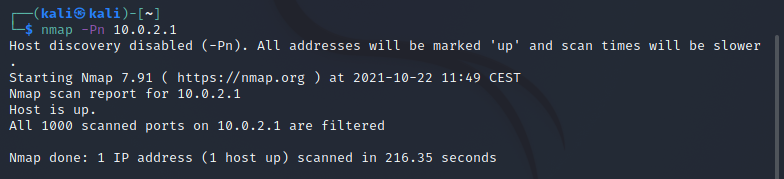
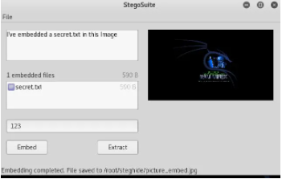

Simulacro exámen
- Consige que ufw non permita ningunha comunicación co exterior

- Averigua os portos que ten abertos o teu router. Saída do terminal

- Fai un manual uso dun programa de esteganografía en html
Agora que temos kali instalado abrimos o terminal he pomos o seguinte comando para actualizar a lista de paquetes:
sudo apt update
Este outro para actualizar:
sudo apt upgrade
Agora que todo esta atualizado usamos este comando para descargar a aplicación de esteganografía
sudo apt-get install stegosuit

Para usar esta aplicación primeriro hay que seleccionar unha imaxe gardada dende "file" arriba a esquerda
No primeriro cadro de texto a mesaxe oculta, no segundo vai o nome do archivo e no terceilo o contrasinal.
Unha vez posta toda a información fas click en "Embed" para gardalo e en "Extract" para sacar a mensaxe oculta